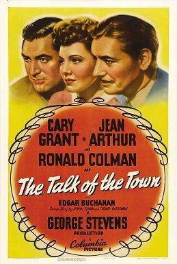
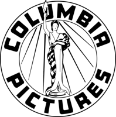

The Talk of the Town

Starring: Cary Grant, Jean Arthur, Ronald Colman
Director: George Stevens
Writer: Sidney Buchman, Sidney Harmon, Dale Van Every
Producer: George Stevens, Fred Guiol
The Talk of the Town is a 1942 American comedy-drama film directed by George Stevens and starring Cary Grant, Jean Arthur, and Ronald Colman, with a supporting cast featuring Edgar Buchanan and Glenda Farrell. The screenplay was written by Irwin Shaw and Sidney Buchman (and an adaptation by Dale Van Every) from a story by Sidney Harmon.
Trivia
- Nominated for: Academy Award for Best Picture; Academy Award for Best Story; Academy Award for Best Cinematography, Black-and-White; Academy Award for Best Film Editing; and 3 more.
- The Talk of the Town began with the working title Mr. Twilight, but Cary Grant insisted it be changed.
- The title The Talk of the Town was registered to Universal Studios, and Columbia had to relinquish the rights to use Sin Town in return.
- Other titles considered for the film included Three's a Crowd, The Gentlemen Misbehave, Justice Winks an Eye, In Love with You, You're Wonderful, A Local Affair, The Woman's Touch, Morning for Angels, Scandal in Lochester, The Lochester Affair, and even Nothing Ever Happens.
Filming Locations
- Principal photography was originally scheduled to begin on January 17, 1942, but was delayed after Carole Lombard had been killed in a plane crash while selling war bonds in the Midwest.
Previous Showings
15 Runs • 9 Festivals
16,756 tickets sold
Original Billings: 1 run (October 11, 1942)
Original Run: October 11, 1942 (Sunday - Thursday)
All runs on record (15):
- October 11, 1942 (Sunday - Thursday)Cary Grant, Jean Arthur, Ronald Colman
- January 24 - 25, 1991 · 637 ticketsw/ Lucky Partners
- September 3 - 4, 1992 · 1,108 ticketsw/ People Will Talk
- August 2 - 5, 1997 · 1,793 ticketsw/ Only Angels Have Wings
- August 15 - 18, 1998 · 1,286 ticketsDear Old Hollywoodw/ Only Angels Have Wings
- December 4 - 7, 1999 · 911 ticketsHoliday 1999w/ Only Angels Have Wings
- April 26 - May 2, 2002 · 1,959 ticketscg2-2002w/ Once Upon a Honeymoon
- April 7 - 11, 2006 · 2,105 ticketsRonald Colmanw/ The Prisoner of Zenda
- May 31 - June 3, 2006 · 949 ticketsRonald Colmanw/ Lucky Partners
- April 10 - 13, 2010 · 1,488 ticketsSpring 2010w/ Adam's Rib
- April 10 - 12, 2015 · 1,224 ticketsCary Grant every Fri-Sat-Sun Plus Ernst Lubitsch and Rouben Mamoulian every Wedsw/ Sylvia Scarlett
- July 3 - 5, 2018 · 714 ticketsw/ Arsenic and Old Lace
- August 18 - 19, 2022 · 540 ticketsSummer 2022w/ Only Angels Have Wings
- July 29 - 30, 2023 · 1,359 ticketsSummer 2023: The Best of Cary Grant and Alfred Hitchcockw/ The Philadelphia Story
- August 14 - 15, 2025 · 683 ticketsSummer 2025w/ A Tale of Two Cities